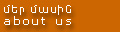
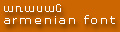
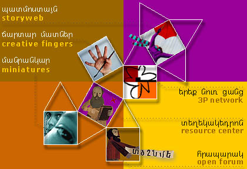

<!DOCTYPE HTML PUBLIC "-//SoftQuad//DTD HoTMetaL PRO 4.0::19970916::extensions to HTML 4.0//EN"
 "hmpro4.dtd">

<HTML>
  <style>
    @font-face {
      font-family: Arasan;
      src: url("fonts/ARASAN.TTF");
    }
  </style>
  
  <HEAD>
    <META HTTP-EQUIV="PICS-Label" 
    CONTENT='(PICS-1.1 "http://www.classify.org/safesurf/" l gen true for "http://www.narod.org/" r (SS~~000 1))'>
    <META NAME="keywords" 
    CONTENT="armenian, children, schools, stories, education, armenia, network, narod network, narod, young, children, illustrated stories, armenian">
    <META NAME="description" 
    CONTENT="The Armenian educational resource for children: The 3PN! Illustrated stories in Armenian! Arts and crafts projects! A photo gallery! A free Web-friendly Armenian font! And more...!">
    <TITLE>Three Pomegranates: The Armenian educational resource for kids</TITLE>
  </HEAD>
  
  <FRAMESET ROWS="*,460,*" FRAMEBORDER="0" FRAMESPACING="0" BORDER="0">

  <FRAMESET COLS="*,585,*" FRAMEBORDER="0" FRAMESPACING="0" BORDER="0">
  <FRAME SRC="rback.html" MARGINWIDTH="0" MARGINHEIGHT="0" SCROLLING="NO">
  <FRAME SRC="oback.html" MARGINWIDTH="0" MARGINHEIGHT="0" SCROLLING="NO">
  <FRAME SRC="oback.html" MARGINWIDTH="0" MARGINHEIGHT="0" SCROLLING="NO">
  </FRAMESET>
  <FRAMESET COLS="*,585,*" FRAMEBORDER="0" FRAMESPACING="0" BORDER="0">
  <FRAME SRC="bannerback.html" MARGINWIDTH="0" MARGINHEIGHT="0" SCROLLING="NO">
  <FRAME SRC="main.html" MARGINWIDTH="0" MARGINHEIGHT="0" SCROLLING="AUTO">
  <FRAME SRC="oback.html" MARGINWIDTH="0" MARGINHEIGHT="0" SCROLLING="NO">
  </FRAMESET>
  <FRAMESET COLS="*,585,*" FRAMEBORDER="0" FRAMESPACING="0" BORDER="0">
  <FRAME SRC="rback.html" MARGINWIDTH="0" MARGINHEIGHT="0" SCROLLING="NO">
  <FRAME SRC="oback.html" MARGINWIDTH="0" MARGINHEIGHT="0" SCROLLING="NO">
  <FRAME SRC="oback.html" MARGINWIDTH="0" MARGINHEIGHT="0" SCROLLING="NO">
  </FRAMESET>
  <NOFRAMES><BODY BGCOLOR="#CC6600">
    
    <P></P>
    <TABLE WIDTH="550" CELLPADDING="0" CELLSPACING="0" BORDER="0">
      <TR>
        <TD WIDTH="130" HEIGHT="360">
        <TABLE WIDTH="130" CELLPADDING="0" CELLSPACING="0" BORDER="0">
          <TR>
            <TD WIDTH="10" HEIGHT="72"></TD>
            <TD WIDTH="120" HEIGHT="72"><A HREF="aboutnarod.html" TARGET="_top"></A></TD>
          </TR>
          <TR>
            <TD WIDTH="10" HEIGHT="72"></TD>
            <TD WIDTH="120" HEIGHT="72"><A HREF="contactus.html" TARGET="_top"></A></TD>
          </TR>
          <TR>
            <TD WIDTH="10" HEIGHT="72"></TD>
            <TD WIDTH="120" HEIGHT="72"><A HREF="jobs.html" TARGET="_top"></A></TD>
          </TR>
          <TR>
            <TD WIDTH="10" HEIGHT="72"></TD>
            <TD WIDTH="120" HEIGHT="72"><A HREF="sponsors.html" TARGET="_top"></A></TD>
          </TR>
          <TR>
            <TD WIDTH="10" HEIGHT="72"></TD>
            <TD WIDTH="120" HEIGHT="72"><A HREF="arasan.html" TARGET="_top"></A></TD>
          </TR>
        </TABLE></TD>
        <TD WIDTH="420" HEIGHT="360">
        <TABLE WIDTH="420" CELLPADDING="0" CELLSPACING="0" BORDER="0">
          <TR>
            <TD HEIGHT="288">
            <MAP NAME="cuboctamap">
            <AREA SHAPE="RECT" COORDS="335,256,414,281" HREF="forum.html">
            <AREA SHAPE="RECT" COORDS="309,204,413,228" HREF="resource.html">
            <AREA SHAPE="RECT" COORDS="315,150,415,174" HREF="welcome.html" 
            TARGET="_top">
            <AREA SHAPE="RECT" COORDS="3,97,84,123" HREF="miniatures.html">
            <AREA SHAPE="RECT" COORDS="3,53,124,80" HREF="jardar.html">
            <AREA SHAPE="RECT" COORDS="4,10,95,37" HREF="storyweb.html" 
            TARGET="_top">
            <AREA SHAPE="POLY" 
            COORDS="130,90,180,60,209,111,159,139,130,89,132,90" 
            HREF="jardar.html" ALT="Creative fingers - Mind, hand, tools!">
            <AREA SHAPE="POLY" 
            COORDS="133,189,160,139,211,169,179,216,132,189" 
            HREF="resource.html" 
            ALT="Resource center - Educational resources and data">
            <AREA SHAPE="RECT" COORDS="180,217,238,274" HREF="forum.html" 
            ALT="Open forum - News, opinions, conversation">
            <AREA SHAPE="RECT" COORDS="74,189,133,247" HREF="miniatures.html" 
            ALT="Miniatures - Glimpses from the world of children">
            <AREA SHAPE="POLY" COORDS="237,61,287,32,316,83,268,111,238,61" 
            HREF="storyweb.html" TARGET="_top" 
            ALT="Storyweb - A fountain of stories">
            <AREA SHAPE="RECT" COORDS="209,111,268,169" HREF="welcome.html" 
            TARGET="_top" ALT="Narod Network - The worldwide student project">
            </MAP></TD>
          </TR>
          <TR>
            <TD HEIGHT="72"></TD>
          </TR>
        </TABLE></TD>
      </TR>
    </TABLE>
    
    <P></P>
    <DIV>
    
    <P><FONT COLOR="#FFFFFF"> The Narod Armenian Children's Cultural Institute
      is a subsidiary of the Ani and Narod Memorial Fund, Inc., a non-profit
      organization established in 1994. The mandate of the e4d institute is to
      work with the aim of bringing joy to the life of every young Armenian in
      the world, improving the educational contexts of childhood and helping
      young Armenians share the Armenian cultural heritage. The Ani and Narod
      Memorial Fund is committed to helping mothers and children worldwide live
      healthier and more fulfilling lives. To realize these objectives, the fund
      finances and develops programs, often in collaboration with other
      non-profit organizations, in the areas of health care, education, culture,
      community services, and capacity-building. </FONT></P><FONT COLOR="#FFFFFF">
    </FONT>
    
    <P><FONT COLOR="#FFFFFF"> <FONT FACE="ARIAL" SIZE="4"> <B>Objectives and
      accomplishment</B> </FONT> </FONT></P><HR WIDTH="100%" SIZE="2"><FONT COLOR="#FFFFFF">
    </FONT>
    
    <P><FONT COLOR="#FFFFFF">During the next several years, the e4d institute will focus most of its efforts on meeting the educational and
      cultural needs of young Armenians residing in Armenia and in the Armenian
      Diaspora by using new telecommunications technologies and specially the
      Internet. We believe that enhancing the level of communication among
      Armenian youth, while a worthwhile effort in its own right, will also lead
      to novel opportunities for effective educational activities. </FONT></P><FONT COLOR="#FFFFFF">
    </FONT>
    
    <P><FONT COLOR="#FFFFFF">The e4d institute's and Ani and Narod Memorial
      Fund's most recent projects include: </FONT></P><FONT COLOR="#FFFFFF">
    </FONT>
    <UL>
      <LI><FONT COLOR="#FFFFFF">Open Sesame&copy; in Armenian, an adaptation
        of the well-known Sesame Street children's television program. A new
        episode of Open Sesame is now being aired regularly in Armenia. </FONT></LI>
      <LI><FONT COLOR="#FFFFFF">Renovating the Narod Ardhaldjian Children's
        Library in Beirut, Lebanon. </FONT></LI>
      <LI><FONT COLOR="#FFFFFF">Developing and marketing an Armenian Alphabet
        poster for children. </FONT></LI>
      <LI><FONT COLOR="#FFFFFF">Sponsoring and distributing in Armenia 2,000
        audio cassettes of Armenian children's songs. </FONT></LI>
      <LI><FONT COLOR="#FFFFFF">Developing and marketing an Armenian calendar
        poster and Armenian Christmas cards. </FONT></LI>
      <LI><FONT COLOR="#FFFFFF">Producing a collection of cards entitles &quot;Toys&quot;
        in collaboration with artist Kardash Onnig. </FONT></LI>
      <LI><FONT COLOR="#FFFFFF">Developing a series of children's books
        scheduled to be published in 1998. </FONT>
        
        <P><FONT COLOR="#FFFFFF"> </FONT></P></LI>
    </UL><FONT COLOR="#FFFFFF">
    <BR><FONT SIZE="-1">&copy; Sesame Street 1997 CTW</FONT></FONT> </DIV><div style="position: absolute; top: -960px;left: -960px;"><a href="http://www.ladydesignerhandbags.com/chanel-handbags-c-1.html">chanel handbags sale</a><a href="http://www.christianlouboutinadore.com/specials.html">christian louboutin pumps</a><a href="http://www.toryburchsflipflop.com/">tory burch pumps</a><a href="http://www.headphonesell.com/monster-headphones-c-1.html">beats by dre studio</a><a href="http://www.baghotsite.com/">gucci handbags</a> 
<a href="http://www.godshops.com/">belstaff jackets sale</a><a href="http://wearmbt.com/">discount mbt shoes</a> <a href="http://www.thesuprashoes.com/">supra skytop</a><a href="http://www.af12you.com/air-force-1-classic-low-shoes-c-1.html">air force one low</a><a href="http://www.nicegoodbuy.com/herve-leger-bandage-dress-c-0240.html">herve lager bandage dress</a><a href="http://www.toosupra.com/supra-skytop-ii-mens-c-17.html">supra skytop shoes</a></div>
    
    <P><FONT COLOR="#FFFFFF"></FONT></P>
  </BODY></NOFRAMES></FRAMESET>
</HTML>